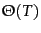
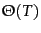

Adopting a positional index expands required postings storage significantly,
even if we compress position values/offsets as we will discuss in
Section 5.3 (page  ). Indeed,
moving to a positional index also changes the asymptotic complexity of
a postings intersection operation, because the number of items to check
is now bounded not by the number of documents but by the total number of tokens
in the document collection .
That is, the complexity of a Boolean query is  rather than
.
However, most applications
have little choice but to accept this, since most users
now expect to have the functionality of
phrase and proximity searches.
). Indeed,
moving to a positional index also changes the asymptotic complexity of
a postings intersection operation, because the number of items to check
is now bounded not by the number of documents but by the total number of tokens
in the document collection .
That is, the complexity of a Boolean query is  rather than
.
However, most applications
have little choice but to accept this, since most users
now expect to have the functionality of
phrase and proximity searches.
Let's examine the space implications of having a positional index. A posting now needs an entry for each occurrence of a term. The index size thus depends on the average document size. The average web page has less than 1000 terms, but documents like SEC stock filings, books, and even some epic poems easily reach 100,000 terms. Consider a term with frequency 1 in 1000 terms on average. The result is that large documents cause an increase of two orders of magnitude in the space required to store the postings list:
While the exact numbers depend on the type of documents and the language being indexed, some rough rules of thumb are to expect a positional index to be 2 to 4 times as large as a non-positional index, and to expect a compressed positional index to be about one third to one half the size of the raw text (after removal of markup, etc.) of the original uncompressed documents. Specific numbers for an example collection are given in Table 5.1 (page 5.1 ) and Table 5.6 (page 5.6 ).
Expected Expected entries Document size postings in positional posting 1000 1 1 100,000 1 100